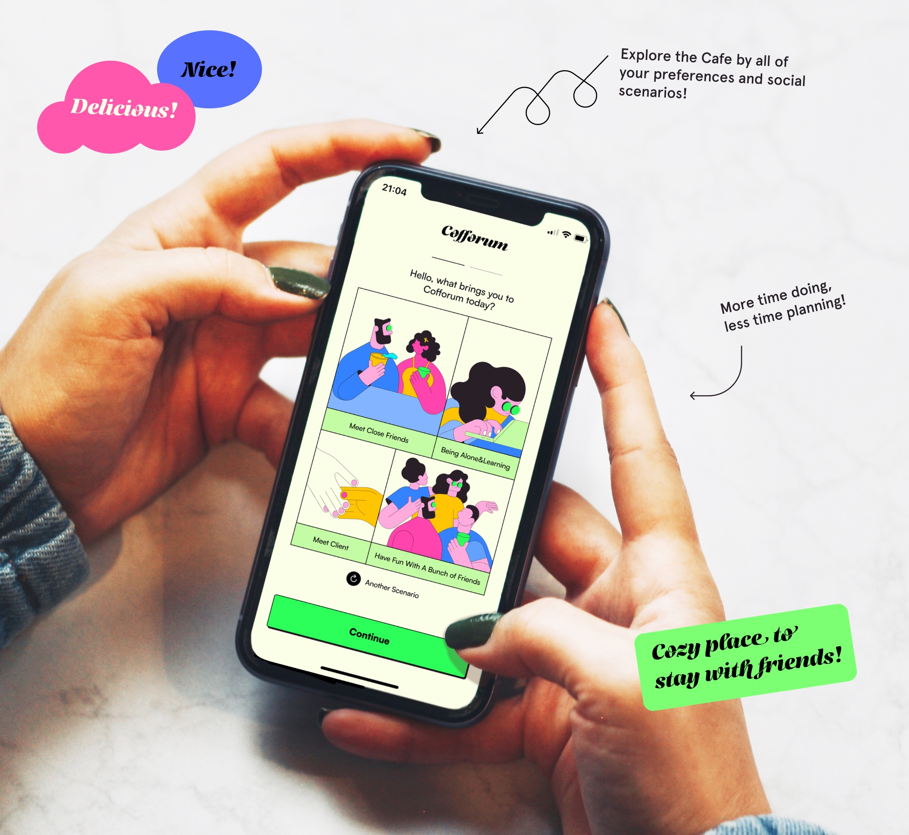
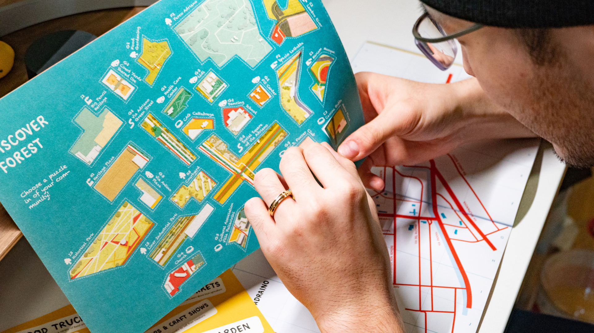

FAYE FANG
About
Research & Design
Art
Project 2018-2024
These are
research and prototypes
about my HCI projects in AI, HMI, and XR.
Mood Radio
Emotional Real-time Conversational Robot
Autonomous Driving Trainer
Gamified Tutorial For Autonomous Driving with Unreal 5
DriveRiff: BMW AI Music-improvisor
drive dynamics associated with real-time AI music generation
BMW Auto Valet Parking
Auto Valet Parking on iDrive X and Panoramic Display
"NIPA": BMW Multifaceted AI Agents
Adaptive intelligent HMI system empowered by LLM
The Color Whisperer
Inclusive AI HMI Framework for Color Vision Diversity
A Review Of HCI Phenomena
Shifts Of HMI Landscape From Socio-Culture, Technology, and Interface Design
AR RIDE
Context-awared AR HUD design framework for cycling

Cofforum | App Design
Global Cafes finder

"Prism": Co-design adriano (Milan)
Community-centered service design framework
Design For The New Normality
The evolving social-behavioral changes and patterns during Covid-19
Like my research? Looking to boost your's as well with some awesome collaboration? Make sure to hit me up.
Faye Fang
Faye.Y.Fang@outlook.com